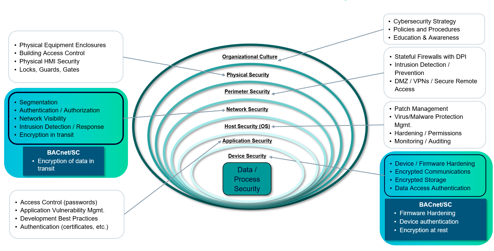

BACnet/SC 作为整体安全方法的一部分
良好的防御系统有很多层次。深度防御是一种涉及人员、流程和技术的整体安全方法，其中分层防御以保护中间的内容（组织的贵重物品）。虽然没有任何安全机制本身是完美的，但当防御分层并正确管理时，发起攻击的工作量就会增加，成功攻击的风险就会降低。
BACnet/SC 极大地提高了 OT 网络安全性，但它本身并不是灵丹妙药。尽管 BACnet/SC 即使在不安全的环境中也能提供安全通信，但 BACnet/SC 应该在全面的深度防御设计中发挥作用，以关闭攻击向量并为组织的攻击面提供最大程度的保护。 BACnet/SC 非常适合整体防御策略，并提供增强的 OT 安全性作为整体组织网络防御策略的一部分强烈鼓励使用额外的安全层。精心设计和正确部署的 OT 网络与 BACnet/SC 支持主动、多层纵深防御方法，可以成为智能建筑在发生网络攻击时的最后一道防线。
包含 BACnet 网络与 BACnet/IP、BACnet MS/TP 和 BACnet/SC 混合的建筑物本质上并不安全。简单地添加 BACnet/SC 不会保护整个 BACnet 互联网，因为相同的物理层 - 以太网和网络层 - 互联网协议 (IP) 可能与不安全的 BACnet/IP 协议共享。最初，具有混合 BACnet 设备的 OT 网络的设计与今天的设计非常相似 - 使用外部安全方法（VLAN、VPN 等）。在这些网络中，BACnet/SC 通信仅在 BACnet/SC 集线器和节点设备之间是安全的。目前，这些混合网络应被视为不安全的 BACnet/IP 网络，直到实现完整的 BACnet/SC 系统，或引入 BACnet 路由防火墙。保护网段的另一种选择是使用高级路由器和防火墙配置，例如深度数据包检查或其他用于管理网络访问和流量的 IT 实践。


BACnet/SC 仅加密通信并验证 BACnet/SC 集线器和节点安全虚拟网络内的设备。使用 BACnet/IP 数据链路的任何其他网段均不安全，仍然需要外部安全措施，例如 VLAN、VPN 等。